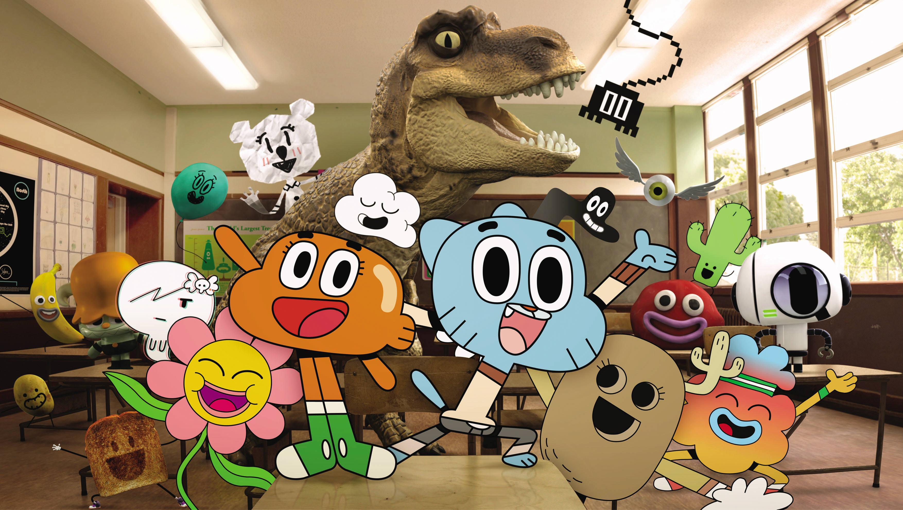
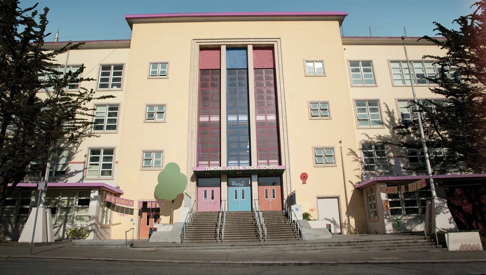
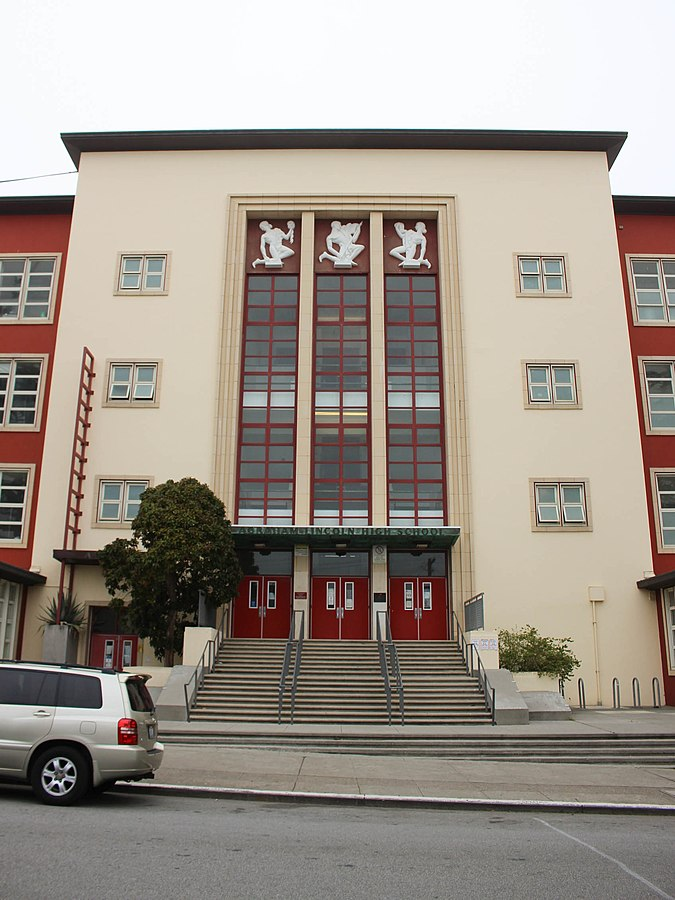
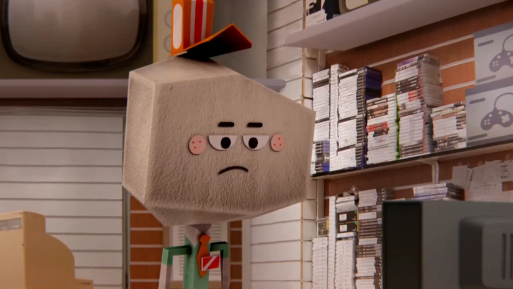

Darwin was a goldfish that was adopted by the Wattersons when Gumball was 4 years old.
He was much smarter than their previous goldfishes and even evolved to have legs.
He is now their adopted sibling and best friend of Gumball.

Is Elmore Junior High based on a real life school?
Yes! Elmore Junior High is based off of Lincoln Elementary. It is located in Vallejo, California, USA.
On the left is Elmore Junior High and on the right is Lincoln Elementary.


How many jobs does Larry Needlemeyer have?
Larry is very hardworking. He has 38 jobs. The stores he works at are listed below.
Stores
Bank of Elmore
Chunky Bite
Elmore Cinema
Elmore Gas Station
Elmore Shopping
Elmore Zoo
Fervidus Pizza
Food 'n' Stuff
Joyful Burger
Laser Video
Lazy Larry
Pet store
Ripley 2000
Shoe store

Is there an Irish dub of The Amazing World of Gumball?
Yes! There was a dub available as gaeilge on TG4 until 2015.
The first 2 seasons were dubbed. Below is a preview.